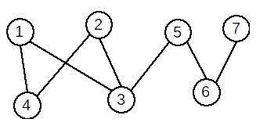

Grafurile au numeroase aplicații în diverse domenii: proiectarea circuitelor electrice, determinarea celui mai scurt drum dintre două localități, rețelele sociale (ex. Facebook), etc. Primele rezultate legate de teoria grafurilor au fost obținute de matematicianul Leonard Euler, cel care a studiat Problema podurilor din Königsberg, din imaginea de mai jos. A demonstrat că problema nu are soluție, iar în onoarea lui o categorie specială de grafuri au fost numite grafuri euleriene.
Terminologie
Definiție: Se numește graf neorientat o pereche ordonată de mulțimi G=(X,U), unde: X este o mulțime finită și nevidă de elemente numite vârfuri sau noduri; U este o mulțime finită de submulțimi cu două elemente din X, numite muchii. Vom nota în continuare vârfurile cu valori între 1 și n – unde n este număru de vârfuri din graf, iar muchiile cu [x,y] sau (x,y), unde x și y sunt vârfuri și se numesc extremitățile muchiei. Un vecin al unui vârf x este orice vârf y cu proprietatea că există muchia [x,y]. Două vârfuri între care există muchie se numesc adiacente. Două muchii sunt incidente dacă au o o extremitate comună. Un vârf este incident cu o muchie dacă vârful este extremitate a acelei muchii. Mulțimea muchiilor are proprietatea de simetrie: dacă [x,y] este muchie, atunci și [y,x] este muchie. Conform definiției: într-un graf neorientat nu există muchie de la un vârf la el însuși; intre două vârfuri distincte există cel mult o muchie.
Exemplu: Fie G=(X,U), unde: X={1,2,3,4,5,6,7,8,9,10,11} U={[1,4],[1,5],[2,3],[2,8],[3,11],[4,5],[4,9],[7,10],[8,11]}

Gradul unui vârf
Definiție Într-un graf neorientat se numește grad al unui vârf
numărul de vârful adiacente cu acesta (sau numărul de muchii incidente cu
acesta). Gradul unui vărf x se notează d(x) (degree).
Observatii:
- un vârf cu gradul 0 se numește izolat. În graful de mai sus, vârful 6 este izolat.
- un vârf cu gradul 1 se numește terminal. În graful de mai sus, vârful 9 este vârf terminal.
- gradul maxim al unui vârf într-un graf cu n vârfuri este n-1.
- Suma gradelor tuturor vârfurilor este număr par.
- Într-un graf neorientat, numărul de vârfuri de grad impar este întotdeauna par.
Reprezentarea grafurilor neorientate
1.Matricea de adiacență: Pentru un graf neorientat G=(X,U) cu n vârfuri, matricea de adiacență este o matrice cu n linii și n coloane și elemente din {0,1}, cu:
Exemplu:
Pentru graful neorientat de mai jos avem următoarea matrice de adiacență:
2.Lista de muchii
Lista de muchii a unui graf neorientat reprezintă o mulțime ce conține toate muchiile din graf. Pentru graful de sus, lista de muchii este: U={[1,2],[1,5],[2,5],[4,5]} Pentru reprezentarea în memorie putem folosi:
- un tablou unidimensional cu elemente de tip struct {int I,J;}
- două tablouri unidimensionale cu elemente de tip int
- o listă alocată dinamic
- etc.
Pentru un graf neorientat cu G=(X,U) se va memora numărul de vârfuri n și apoi, pentru fiecare vârf x, lista vârfurilor adiacente cu x, adică a vârfurilor y cu proprietatea că există muchia [x,y]. Pentru graful de sus, listele de adiacență sunt:
1: 2 5
2: 1 5
3: vidă
4: 5
5: 1 2 4
La reprezentarea în memorie trebui avut în vedere că dimensiunile listelor de vecini sunt variabile. De aceea, este neeficientă utilizarea unor tablouri alocate static. Astfel, putem folosi:
- un șir de n tablouri unidimensionale alocate dinamic;
- un șir de n vectori din STL;
- un șir de n liste simplu (dublu) înlănțuite alocate dinamic.
Graf parțial. Subgraf. Graf complementar
Definiție: Fie G=(X, U) un graf neorientat. Se numeşte graf parțial
al grafului G, graful neorientat G1=(X, U1), unde U1 ⊆ U. Din definiție
rezultă:
- Un graf parțial al unui graf neorientat G=(V,U), are aceeaşi mulțime de vârfuri ca şi G, iar mulțimea muchiilor este o submulțime a lui U sau chiar U.
- Fie G=(X, U) un graf neorientat. Un graf parțial al grafului G se obține păstrând vârfurile şi eliminând eventual nişte muchii (se pot elimina şi toate muchiile sau chiar nici una).
Din definiție rezultă:
Fie G=(X,U) un graf orientat. Un subgraf al grafului G, se obține ştergând eventual anumite vârfuri şi odată cu acestea şi muchiile care le admit ca extremitate (nu se pot şterge toate vârfurile deoarece s-ar obține un graf cu mulțimea vârfurilor vidă).
 Teoremă: Fie G un graf neorientat cu n vârfuri și m muchii. Atunci:
Teoremă: Fie G un graf neorientat cu n vârfuri și m muchii. Atunci:
- graful G admite 2^m grafuri parțiale;
- graful G admite 2^(n)–1 subgrafuri;
- graful G admite un unic graf complementar.
Graf nul. Graf complet. Graf regulat. Graf bipartit
Definiție:
Un graf neorientat se numește graf nul dacă mulțimea muchiilor este vidă.
Într-un graf nul toate vârfurile sunt izolate.
Definiție: Fie G=(X, U) un graf neorientat. Graful G se numește graf complet dacă oricare două vârfuri distincte ale sale sunt adiacente. Un graf complet cu n vârfuri se notează Kn.
Exemplu: Graful următor este graful K5.

Într-un graf complet cu n vârfuri sunt muchii și fiecare vârf are gradul n-1.
Propoziție:
Sunt grafuri neorientate distincte cu n vârfuri. Definiție: Un graf în care toate nodurile au acelaşi grad se numește graf regulat. Exemplu:
Graful de mai jos este regulat.

Definiţie:
Un graf G=(X, U) se numește graf bipartit dacă există două mulţimi nevide A și B astfel încât X=A ∪ B, A ∩ B = ∅ şi orice muchie u a lui G are o extremitate în A iar cealaltă în B. Mulţimile A şi B formează o partiţie a lui X.
Exemplu:
Graful următor este bipartit. A={1,2,5,7} și B={3,4,6}.

Definiție:
Un graf bipartit G=(X,U) se numește bipartit complet dacă pentru oricare două vârfuri x∈A și y∈B, există în graf muchia [x,y]; adică [x,y]∈U.
Exemplu:
Graful următor este bipartit complet.
Conexitate
Lanț, ciclu
Definiție: Se numește lanț o succesiune de vârfuri L=[x1,x2,⋯xk] cu proprietatea că oricare două vârfuri consecutive sunt adiacente.
Se numește lanț o succesiune de vârfuri L=[x1,x2,⋯xk] cu proprietatea că oricare două vârfuri consecutive sunt adiacente.
Definiție: Se numește ciclu un lanț simplu în care primul vârf este identic cu ultimul. Dacă toate vârfurile sunt distincte, mai puțin primul și ultimul, se numește ciclu elementar. Lungimea unui ciclu este egală cu numărul de muchii din ciclu. Lungimea minimă a unui ciclu este 3. Un ciclu se numește par dacă lungimea sa este pară, respectiv impar în caz contrar. Un graf neorientat care nu conține niciun ciclu se numește aciclic.
Exemple: În graful de mai sus:

- [2,4,1,3,5,7] este un lanț elementar
- [3,5,7,6,5,1] este un lanț neelementar, dar simplu
- [2,3,5,7,6,5,3,1] este un lanț compus
- [1,5,3,2,4,1] este un ciclu elementar
- [1,3,5,7,6,5,1] este un ciclu neelementar
Graf conex. Componente conexe
Definiție: Un graf neorientat se numește graf conex dacă pentru oricare două vârfuri x și y diferite ale sale, există cel puțin un lanț care le leagă, adică x este extremitatea inițială și y este extremitatea finală. Un graf cu un singur nod este, prin definiție, conex. Definiție: Se numește componentă conexă a unui graf G=(X,U) un subgraf H=(Y, V), conex, al lui G care are proprietatea că nu există nici un lanț în G care să lege un vârf din Y cu un vârf din X – Y. Subgraful H este conex și maximal cu această proprietate (dacă s-ar mai adăuga un vârf nu ar mai fi conex.) Un graf este conex dacă admite o singură componentă conexă.
Graful următor este conex:
Graful următor nu este conex și are 4 componente conexe.

Arbore. Pădure
Definiție:
Se numește arbore un graf conex și aciclic.
Exemplu
Graful următor este arbore:

Observații:
- Un arbore cu n vârfuri are n-1 muchii.
- Un arbore este un graf conex și minimal cu această proprietate; dacă s-ar mai elimina o muchie, graful nu ar mai fi conex.
- Un arbore este un graf aciclic și maximal cu această proprietate; dacă s-ar mai adăuga o muchie, s-ar obține un ciclu.
Graf hamiltonian. Graf eulerian
Definiție:
Se numește graf hamiltonian un graf care conține un ciclu hamiltonian. Se
numește ciclu hamiltonian un ciclu elementar care conține toate vârfurile
grafului.
Exemplu: Graful următor este hamiltonian. Un ciclu hamiltonian este: [1,4,2,3,7,6,5,1]
Teoremă: Un G un graf neorientat. Dacă are n≥3 vârfuri şi gradul oricărui vârf verifică inegalitatea d(x)≥n/2 atunci G este hamiltonian.
Definiție: Se numește graf eulerian un graf care conține un ciclu eulerian. Se numește ciclu eulerian un ciclu care conține toate muchiile grafului.
Graful următor este eulerian. Un ciclu eulerian este: [1,4,2,1,3,2,7,3,5,7,6,5,1]
Teoremă:
Un graf G = (X,U), fără vârfuri izolate, este eulerian dacă şi numai dacă este conex şi gradele tuturor vârfurilor sale sunt numere pare.
Grafuri orientate
Se numeşte graf orientat sau digraf o pereche ordonată de mulțimi notată G=(V, U), unde:
V este o mulțime finită şi nevidă ale cărei elemente se numesc noduri sau vârfuri, U este o mulțime de perechi ordonate de elemente distincte din V ale cărei elemente se numesc arce;
Notiuni:
-
extremități ale unui arc: pentru arcul u=(x,y), se numesc extremități
ale sale nodurile x şi y;
- x se numeşte extremitate inițială;
- y se numeşte extremitate finală;
- y se numește succesor al lui x;
- x se numește predecesor al lui y.
- vârfuri adiacente: dacă într-un graf există arcul u=(x,y) (sau u=(y,x), sau amândouă), se spune despre nodurile x şi y că sunt adiacente;
-
incidență:
- dacă u1 şi u2 sunt două arce ale aceluiaşi graf, se numesc incidente dacă au o extremitate comună. Exemplu: u1=(x,y) şi u2=(y,z) sunt incidente;
- dacă u1=(x,y) este un arc într-un graf, se spune despre el şi nodul x, sau nodul y, că sunt incidente.
Grade
Definiție: Fie G=(V, U) un graf orientat și x un nod al său.
- Se numeşte grad exterior al nodului x, numărul arcelor de forma (x,y) (adică numărul arcelor care ies din x), notat d+(x).
- Se numeşte grad interior al nodului x, numărul arcelor de forma (y,x) (adică numărul arcelor care intră în x), notat d-(x).

Pentru graful de sus: d+(2)=2, d-(2)=3
Graf complet. Graf turneu.
Fie G=(V, U) un graf orientat. Graful G se numește graf complet dacă oricare două vârfuri distincte ale sale sunt adiacente.
Două vârfuri x și y sunt adiacente dacă:
- între ele există arcul (x,y), sau
- între ele există arcul (y,x), sau
- între ele există arcele (x,y) şi (y,x).
Teoremă: Numărul de grafuri orientate complete cu n noduri este 3^n*(n-1)/2. Definiție: Un graf orientat este turneu, dacă oricare ar fi două vârfuri i şi j, i≠j, între ele există un singur arc: arcul (i,j) sau arcul (j,i).
Proprietăți:
- Orice graf turneu este graf complet.
- TeAvem 2^n*(n-1)/2 grafuri turneu cu n noduri.a
- În orice graf turneu există un drum elementar care trece prin toate vârfurile grafului.
Conexitate
*Lanț. Drum
Definiție: Fie G=(V, U) un graf orientat. Se numește lanț, în graful G, o
succesiune de arce, notată L = (u1 , u2 ,..., uk) cu proprietatea ca
oricare două arce consecutive au o extremitate comună (nu are importanță
orientarea arcelor). sau Definiție: Fie G=(V, U) un graf orientat. Se
numește lanț, în graful G, o succesiune de noduri, notată L = (x1 , x2
,..., xp) cu proprietatea ca oricare două noduri consecutive sunt
adiacente. Lungimea unui lanț este egală cu numărul de arce din care este
alcătuit. Primul nod și ultimul nod dintr-un lanț formează extremitățile
lanțului. Definiție. Fie G=(V, U) un graf orientat. Se numește drum în
graful G o succesiune de noduri, notată D = (x1 , x2 ,..., xk), cu
proprietatea că pentru orice 1 ≤ i < k, (xi,xi+1) este arc în G.
Lungimea unui drum este egală cu numărul de arce din care este alcătuit.
Pentru un drum D = (x1 , x2 ,..., xk), nodurile x1 și xk reprezintă
extremitățile – inițială, respectiv finală. Un lanț (drum) se numește
elementar dacă în el nu se repetă noduri. Un lanț (drum) se numește simplu
dacă în el nu se repetă arce.
*Circuit:
Se numește circuit un drum simplu în care extremitatea inițială și finală
sunt egale. Se numește circuit elementar un circuit în care, cu excepția
extremităților, nu se repetă noduri. Lungimea unui circuit este
reprezentată de numărul de arce din care acesta este alcătuit.
Conexitate. Tare conexitate
Definiții: Fie G=(V,U) un graf orientat. Graful se numește tare conex dacă
între oricare două noduri distincte există cel puțin un drum. Se numește
componentă tare conexă un subgraf tare conex și maximal cu această
calitate – dacă am mai adauga un nod, n-ar mai fi tare conex. Observație:
Un nod al grafului face parte dintr-o singură componentă tare conexă. Dacă
ar face parte din două compoennte tare conexe, ele s-ar “reuni” prin
intermediul acelui nod.
Graf hamiltonian. Graf eulerian
Definiții: Fie un graf orientat G=(V,U). Un drum elementar care conține
toate nodurile grafului se numește drum hamiltonian. Un circuit elementar
care conține toate nodurile grafului se numește circuit hamiltonian. Un
graf care conține un circuit hamiltonian se numește graf hamiltonian.
Definiții:
Fie un graf orientat G=(V,U). Un drum care conține toate arcele grafului
se numește drum eulerian. Un circuit care conține toate arcele grafului se
numește circuit eulerian. Un graf care conține un circuit eulerian se
numește graf eulerian. Teoremă: Un graf fără noduri izolate este eulerian
dacă și numai dacă este conex și pentru fiecare nod, gradul interior este
egal cu cel exterior. Exemplu: Graful orientat de mai jos este eulerian.
Graful de mai sus nu este tare conex. El conține trei componente tare conexe.
Observație: Un nod al grafului face parte dintr-o singură componentă tare conexă. Dacă ar face parte din două compoennte tare conexe, ele s-ar “reuni” prin intermediul acelui nod.
Graf hamiltonian. Graf eulerian
Definiții: Fie un graf orientat G=(V,U). Un drum elementar care conține
toate nodurile grafului se numește drum hamiltonian. Un circuit elementar
care conține toate nodurile grafului se numește circuit hamiltonian. Un
graf care conține un circuit hamiltonian se numește graf hamiltonian.
Definiții: Fie un graf orientat G=(V,U). Un drum care conține toate arcele grafului se numește drum eulerian. Un circuit care conține toate arcele grafului se numește circuit eulerian. Un graf care conține un circuit eulerian se numește graf eulerian. Teoremă: Un graf fără noduri izolate este eulerian dacă și numai dacă este conex și pentru fiecare nod, gradul interior este egal cu cel exterior.
Parcurgerea în adâncime
Parcurgerea în adâncime reprezintă explorarea “naturală” a unui graf neorientat. Este foarte asemănătoare cu modul în care un turist vizitează un oraș în care sunt obiective turistice (vârfurile grafului) și căi de acces între obiective (muchiile). Vizitarea orașului va avea loc din aproape în aproape: se pleacă de la un obiectiv de pornire, se continuă cu un obiectiv învecinat cu acesta, apoi unul învecinat cu al doilea, etc. Parcurgerea în adâncime se face astfel:
- Se începe cu un vârf inițial x, care este în acest moment vârf curent.
- Vârful x se vizitează. Se determină primul său vecin nevizitat y al lui x, care devine vârf curent.
- Apoi se vizitează primul vecin nevizitat al lui y, şi aşa mai departe, mergând în adâncime, până când ajungem la un vârf care nu mai are vecini nevizitați. Când ajungem într-un astfel de vârf, ne întoarcem la “părintele” acestuia – vârful din care am ajuns în acesta.
- Dacă acest vârf mai are vecini nevizitați, alegem următorul vecin nevizitat al său și continuam parcurgerea în același mod.
- Dacă nici acest vârf nu mai are vecini nevizitați, revenim în vârful său părinte și continuăm în același mod, până când toate vârfurile accesibile din vârful de start sunt vizitate.
Implementare C++:
Parcurgerea în lățime
Se parcurge vârful de start, apoi vecinii acestuia, apoi vecinii
nevizitați ai acestora, etc, până când sunt vizitate toate vârfurile
accesibile. Practic, pentru a stabili ordinea de vizitare se folosește o
coadă, iar pentru a stabili dacă un vârf a fost sau nu vizitat se
foloseşte un vector caracteristic. Algoritmul este:
- adaugăm în coadă vârful inițial și îl vizităm
- cât timp coada este nevidă
- extragem un element din coadă
- extragem un element din coadă
- eliminăm elementul din coadă
Implementare C++: